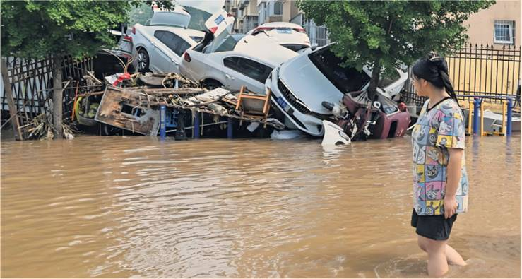

A woman gazes at damaged cars in a flooded neighbourhood of the district of Miyun in north Beijing yesterday.
At least 30 people have been killed by the heavy storms across the city, with 28 deaths in Miyun. Authorities have relocated tens of thousands of people from the region around the Chinese capital after almost a full season’s worth of rain fell in one night.
The storms forced some public transport services to shut down and major tourist attractions to close. State news agency Xinhua reported that more than 30 roads had been damaged, while power was cut off in 136 villages. Communications in the area have also been disrupted by damaged fibre-optic cables. Beijing authorities urged residents to remain indoors and not to report to work unless necessary, as it issued the highest level in its warning system.